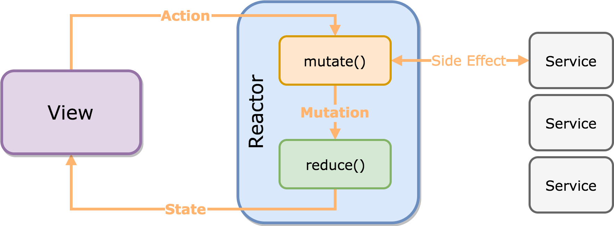

作者
Jeon Suyeol 是 ReactorKit 的作者。他也发布了一些富有创造性的框架，如 Then，URLNavigator，SwiftyImage 以及一些开源项目 RxTodo，Drrrible。他也是多个组织的成员 RxSwiftCommunity，Moya，SwiftKorea。
介绍
ReactorKit 结合了 Flux 和响应式编程。用户行为和页面状态都是通过序列相互传递。这些序列都是单向的：页面只能发出用户行为，然而反应器（Reactor）只能发出状态。

View
View 用于展示数据。ViewController 和 Cell 都可以看作是 View。View 将用户输入绑定到 Action 的序列上，同时将页面状态绑定到 UI 组件上。
定义一个 View 只需要让它遵循 View 协议即可。然后你的类将自动获得一个 reactor 属性。这个属性应该在 View 的外面被设置：
class ProfileViewController: UIViewController, View {
var disposeBag = DisposeBag()
}
profileViewController.reactor = UserViewReactor() // 注入 reactor
当 reactor 属性被设置时，bind(reactor:) 方法就会被调用。执行这个方法来进行用户输入绑定和状态输出绑定。
func bind(reactor: ProfileViewReactor) {
// action (View -> Reactor)
refreshButton.rx.tap.map { Reactor.Action.refresh }
.bind(to: reactor.action)
.disposed(by: self.disposeBag)
// state (Reactor -> View)
reactor.state.map { $0.isFollowing }
.bind(to: followButton.rx.isSelected)
.disposed(by: self.disposeBag)
}
Reactor
Reactor 是与 UI 相互独立的一层，主要负责状态管理。Reactor 最重要的作用就是将业务逻辑从 View 中抽离。每一个 View 都有对应的 Reactor 并且将所有的逻辑代理给 Reactor。Reactor 不需要依赖 View，所以它很容易被测试。
遵循 Reactor 协议即可定义一个 Reactor。这个协议需要定义三个类型：Action，Mutation 和 State。它也需要一个 initialState 属性。
class ProfileViewReactor: Reactor {
// 代表用户行为
enum Action {
case refreshFollowingStatus(Int)
case follow(Int)
}
// 代表状态变化
enum Mutation {
case setFollowing(Bool)
}
// 代表页面状态
struct State {
var isFollowing: Bool = false
}
let initialState: State = State()
}
Action 代表用户行为，State 代表页面状态。Mutation 是 Action 和 State 的桥梁。Reactor 通过两步将用户行为序列转换为页面状态序列：mutate() 和 reduce()。

mutate()
mutate() 接收一个 Action ，然后创建一个 Observable<Mutation>。
func mutate(action: Action) -> Observable<Mutation>
每种状态变化，如，异步操作，API 调用都是在这个方法内执行。
func mutate(action: Action) -> Observable<Mutation> {
switch action {
case let .refreshFollowingStatus(userID): // receive an action
return UserAPI.isFollowing(userID) // create an API stream
.map { (isFollowing: Bool) -> Mutation in
return Mutation.setFollowing(isFollowing) // convert to Mutation stream
}
case let .follow(userID):
return UserAPI.follow()
.map { _ -> Mutation in
return Mutation.setFollowing(true)
}
}
}
reduce()
reduce() 通过旧的 State 以及 Mutation 创建一个新的 State。
func reduce(state: State, mutation: Mutation) -> State
这个发放是一个纯函数。它将同步的返回一个 State。不会产生其他的作用。
func reduce(state: State, mutation: Mutation) -> State {
var state = state // create a copy of the old state
switch mutation {
case let .setFollowing(isFollowing):
state.isFollowing = isFollowing // manipulate the state, creating a new state
return state // return the new state
}
}
transform()
transform() 转换每一种序列。有三种转换方法：
func transform(action: Observable<Action>) -> Observable<Action>
func transform(mutation: Observable<Mutation>) -> Observable<Mutation>
func transform(state: Observable<State>) -> Observable<State>
执行这些方法可以转换或者组合其他的序列。例如，transform(mutation:) 最适合用来组合一个全局事件，生成一个 Mutation 序列。
它也可用来做调试：
func transform(action: Observable<Action>) -> Observable<Action> {
return action.debug("action") // Use RxSwift's debug() operator
}
示例
下一节将用 Github Search 来演示如何使用 ReactorKit。